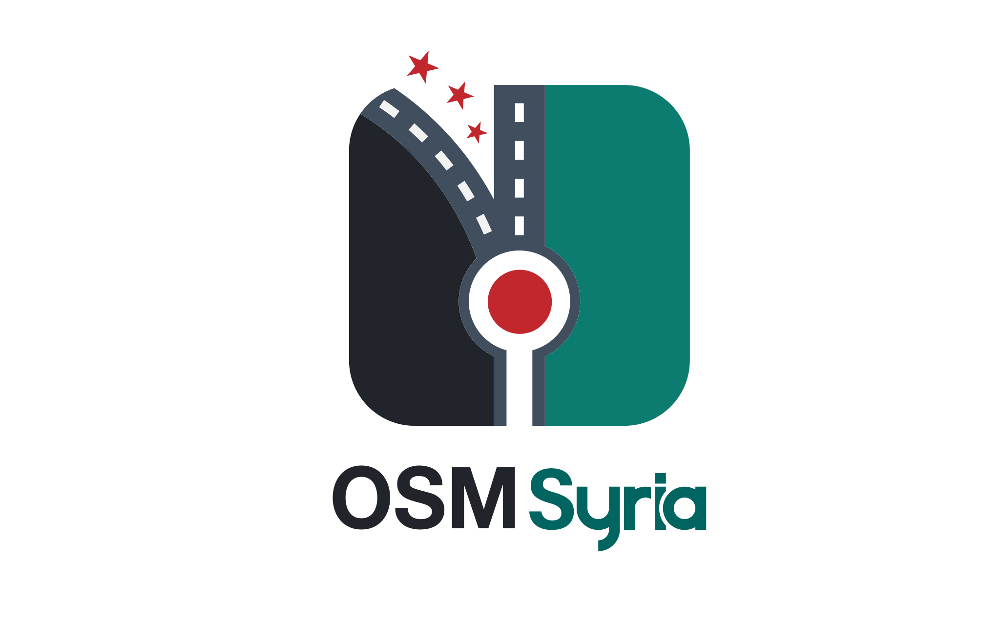

Omran Najjar
An O + N monogram built to sit naturally beside the OSM Syria mark — same teal, same dark badge, same red accent stars — while staying distinct as a personal signature for omran.blog.
How it's built
The ring is the O; a bold letterform nested inside it is the N — two verticals and a diagonal, scaled to sit clear of the ring rather than cross it edge to edge (a full-diameter diagonal through a thick ring reads as a "no entry" sign, not a letter). The footer is a miniature of the green–white–black flag stripe already used under every section title on omran.blog, with three small red dots standing in for the flag's three stars — the "3 dots as stars" brief, rendered in the same circular style already established across the site rather than sharp points.
Shared language with OSM Syria

OSM Syria- Same teal,
#0c7c70, carried into the ring gradient - Same instinct for a dark badge ground rather than a flat white tile
- Same red accent,
#ce1126, used for a small cluster of stars
Variants

Palette
Usage
- Keep clearspace around the mark at least equal to the ring's stroke width
- Use the mono version when placed on a busy photo or a colored background
- Keep the flag-stripe footer and its three stars — they're the signature, not decoration
- Don't recolor the ring gradient or swap in a different red for the stars
- Don't stretch the mark non-uniformly — scale width and height together
- Don't rotate the mark; it reads as a monogram only upright
Reads small, too
Delivered files
assets/visual/on-mark-primary.svg · full-color badge, for dark surfaces and the site itself
assets/visual/on-mark-mono.svg · single-color line mark, for merch, stamps, busy backgrounds
assets/visual/on-lockup.svg · horizontal mark + wordmark, for letterhead and email signatures